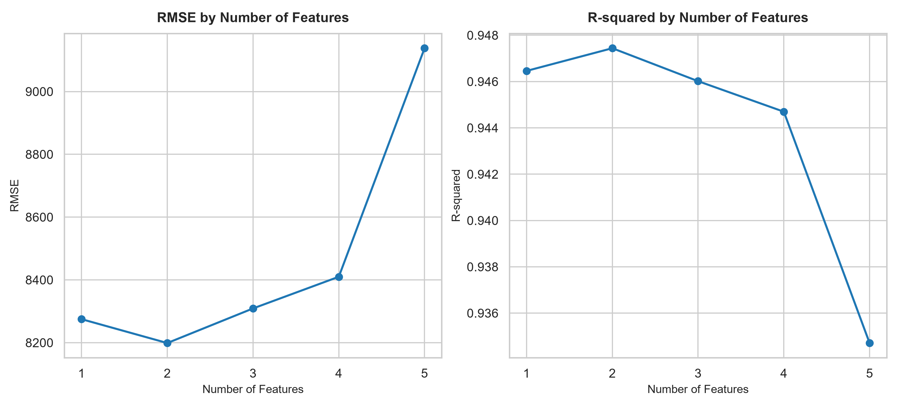
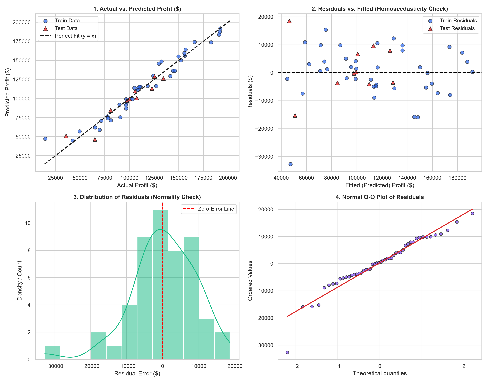
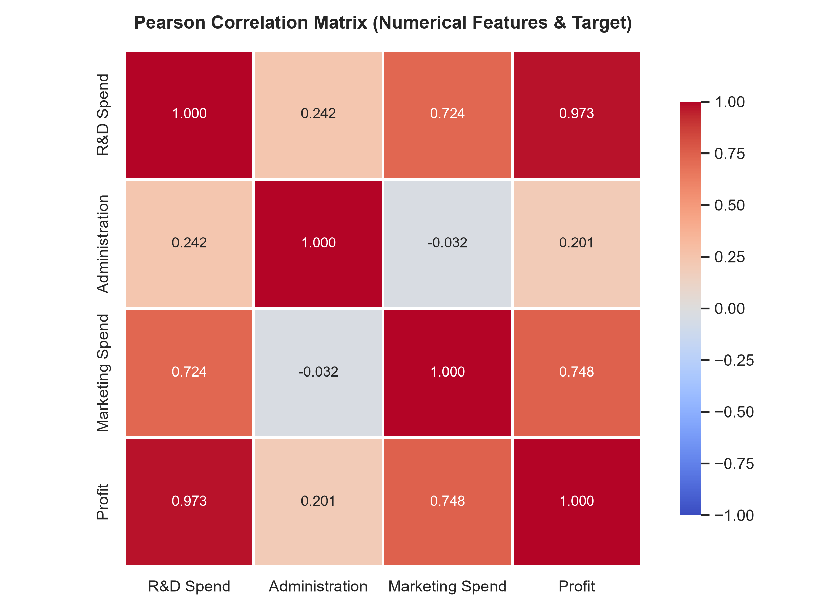
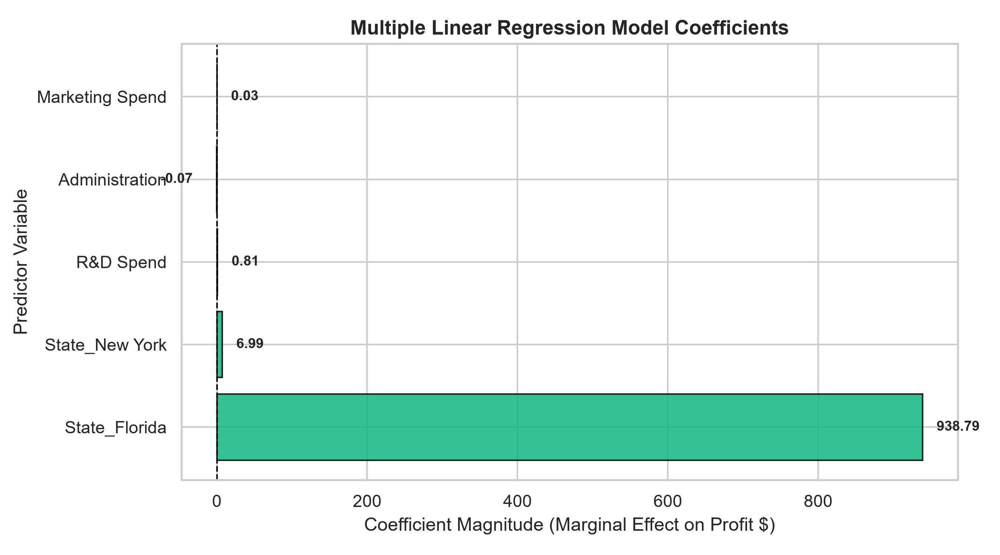
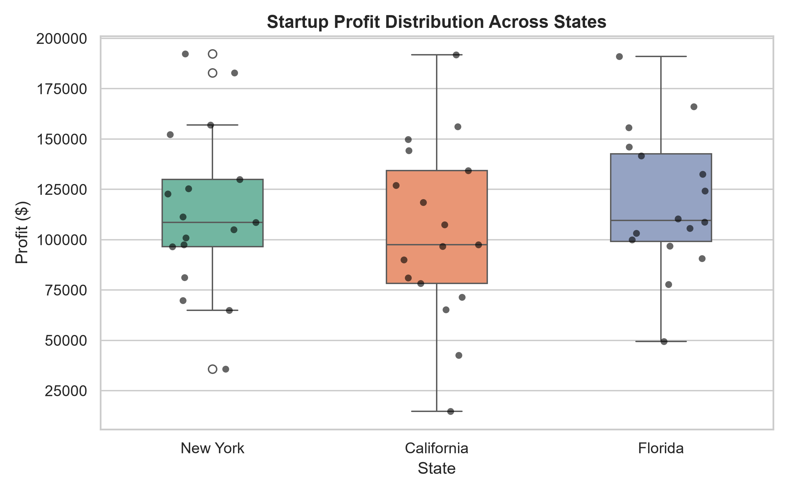

透過嚴謹的資料採礦方法論（CRISP-DM）與 Scikit-Learn 多元線性迴歸，精確拆解研發、行政與行銷資金投入對企業淨利潤的邊際回報率（ROI）。
調整各項營運資金投入與營運州別，即時計算預期淨利潤、資金佔比與模型回歸歸因拆解。
從商業命題定錨、探索性資料分析、特徵工程避免虛擬變數陷阱，到嚴格的高斯-馬可夫殘差診斷與部署。
即時檢視 50 家新創公司的實際獲利與機器學習模型的預測值，點擊任一列可立即帶入上方模擬器進行驗證。
| 編號 | 研發支出 (R&D) | 行政支出 (Admin) | 行銷支出 (Marketing) | 營運州別 (State) | 實際利潤 (Actual) | 模型預測 (Predicted) | 殘差誤差 (Residual) | 動作 |
|---|
完整的古典線性迴歸模型（Gauss-Markov）假設驗證，包含常態性、同質變異數與共線性檢定。





本網頁已具備純前端獨立推論架構與完整檔案，提供 3 種最熱門、永久免費的全球發布方案。
50-startup-ml 的公開倉庫 (Public Repo)。git init
git add .
git commit -m "feat: 50 Startups CRISP-DM Web App"
git branch -M main
git remote add origin https://github.com/您的帳號/50-startup-ml.git
git push -u origin mainmain 並指定 / (root)，點選 Save。https://您的帳號.github.io/50-startup-ml/ 瀏覽！c:\50-startup multi 拖曳到瀏覽器視窗中。index.html，於 10 秒內生成隨機專屬網址（例如：https://startup-pulse-ai.vercel.app）。python -m http.server 8000npx localtunnel --port 8000https://startup-50-demo.loca.lt），任何連網裝置皆可訪問！